Let's Explore Nairobi!
From colourful markets and fascinating wildlife to unforgettable food experiences, there's something for everyone. Whether you're a first-time visitor or a local looking for a new adventure, Nairobi has something waiting for you. Where are we heading?
Get a Little Culture!
Take a piece of Kenya home! Discover the creativity and craftsmanship behind Kenyan beadwork, handmade jewellery, traditional artefacts and colourful souvenirs.
Maasai Market
Looking for something unique? Maasai Market is a wonderful place to discover locally made crafts, paintings, accessories and gifts.
.png)
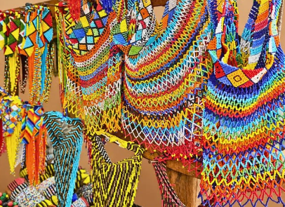
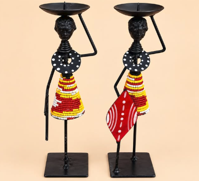
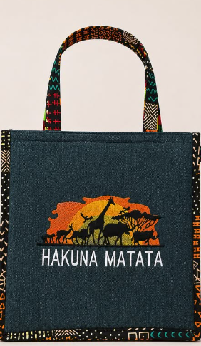
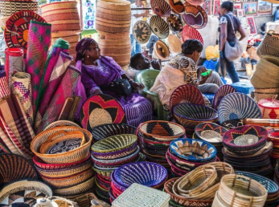
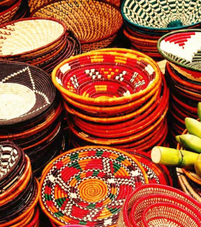
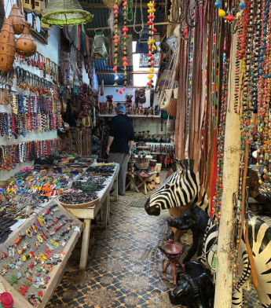
.png)
Wild Things Happen Here! 🦒
Nairobi offers wonderful opportunities to encounter wildlife. Get closer to nature, discover fascinating animals and enjoy memorable experiences.
Meet the Giraffes!
Visit the famous Giraffe Centre and get an opportunity to see Rothschild's giraffes up close. And who knows, you might even enjoy a coffee with a giraffe nearby!
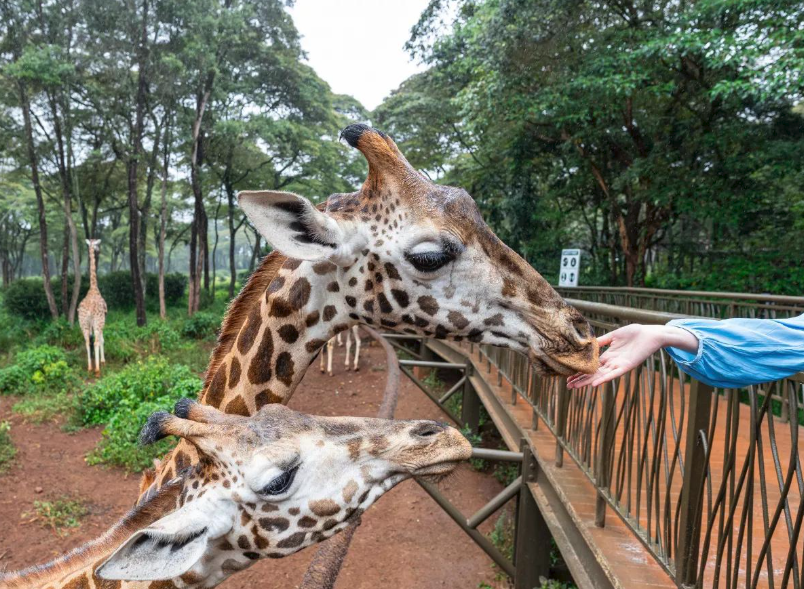
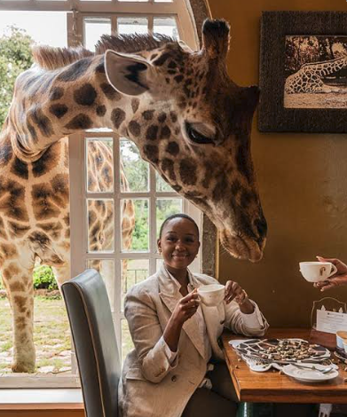
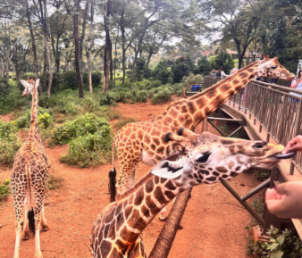
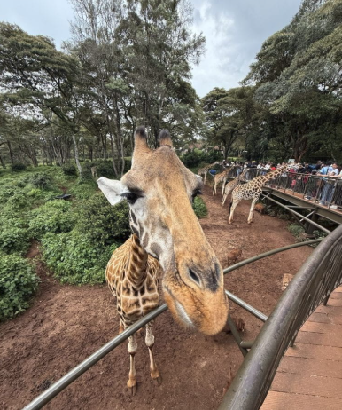
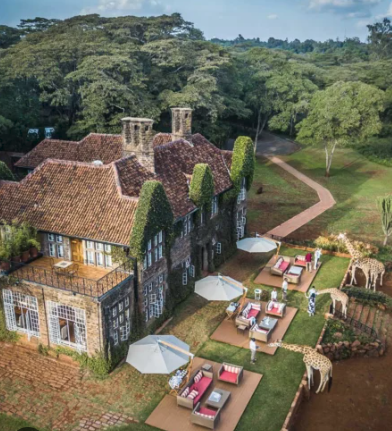
.png)
Not Afraid of a Little Adventure?
Visit the Snake Park and discover fascinating reptiles and other creatures.
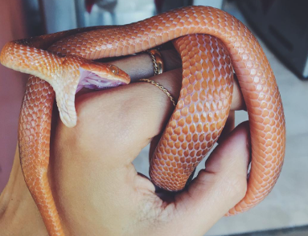
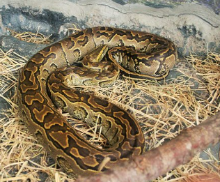
Let's Take a Trip Back in Time!
Curious about Kenya's past? Discover the stories, heritage, art and natural history that have shaped the country.
Nairobi National Museum
Explore exhibitions that introduce you to Kenya's rich history, cultural heritage, people and natural world.
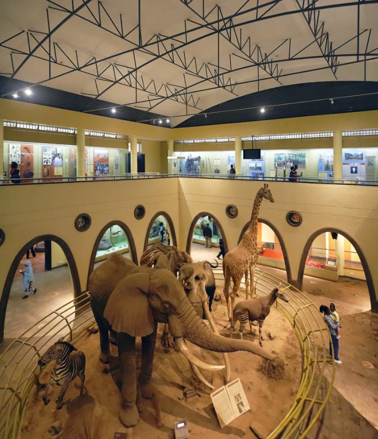

The Snake Park is located next to the National Museum, making it easy to include both in one visit.
Bored? Not in Nairobi!
Fancy a little adventure? Whether you enjoy cycling, nature walks, discovering waterfalls or indoor attractions, Nairobi has plenty of ways to spend your day.
Escape to Karura Forest
Take a break from the busy city and enjoy the green trails, cycling routes, waterfalls and peaceful natural surroundings of Karura.
.png)
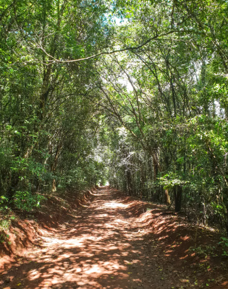
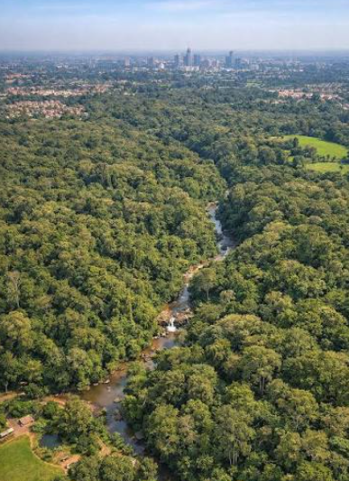
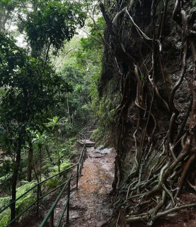
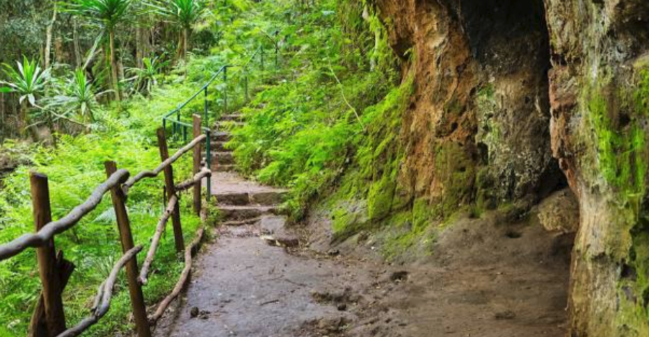
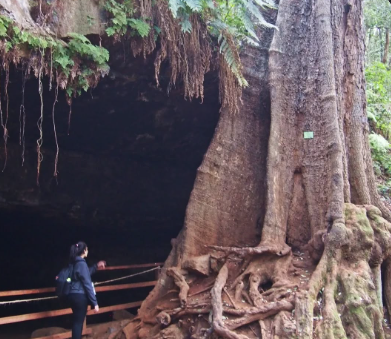

Something a Little Different?
Add the Museum of Illusions to your Nairobi plans for an entertaining indoor experience filled with optical illusions and interactive attractions.
Come Hungry! 🍽️
Good food, great company and a taste of Kenya! Discover traditional dishes, local favourites and flavours worth travelling for.
A Taste of Traditional Kenya
Have you tried Mukimo? A delicious Kikuyu favourite made with mashed potatoes, maize and greens. Then there's the famous Nyama Choma, delicious Ugali, soft Chapati and so much more.
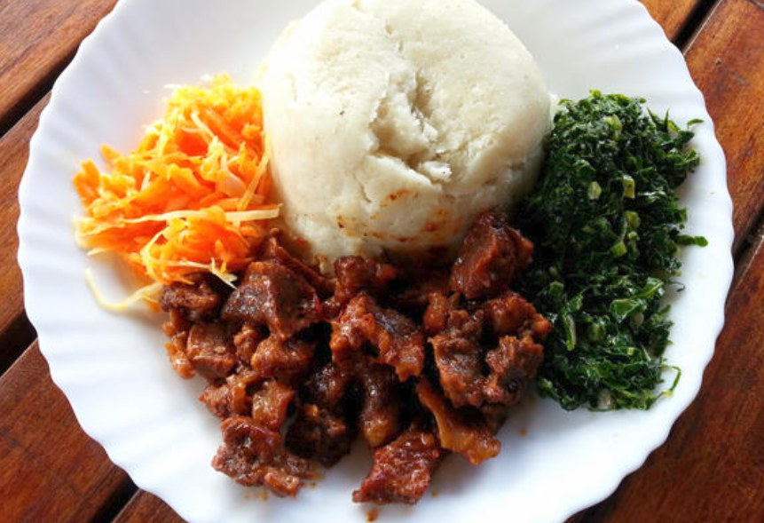
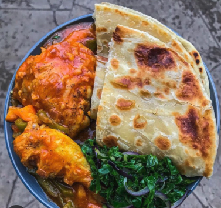
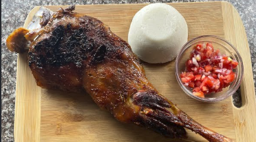
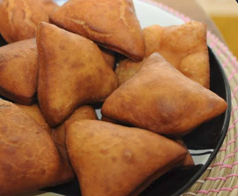
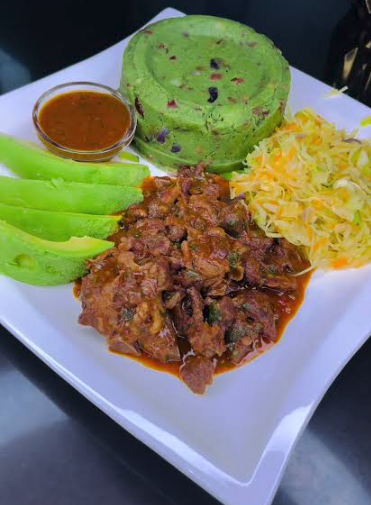
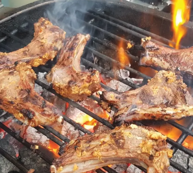
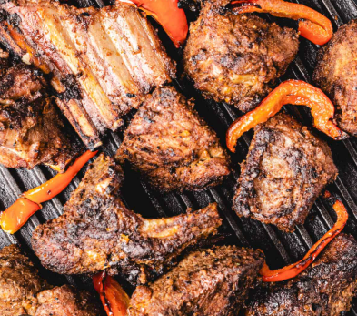
Ready for an Adventure Beyond Nairobi?
Nairobi is just the beginning! Take your Kenyan adventure further and discover the spectacular Maasai Mara.
Take Your Adventure to the Skies!
Experience a breathtaking hot-air balloon safari over the Maasai Mara. Watch the sun rise over the savannah and enjoy incredible views of Kenya's wildlife and wilderness.
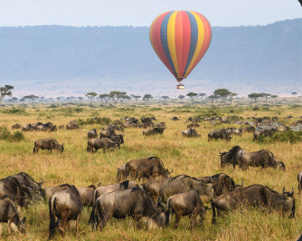
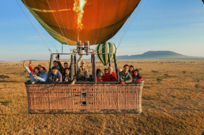
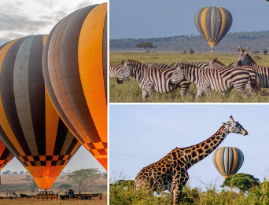
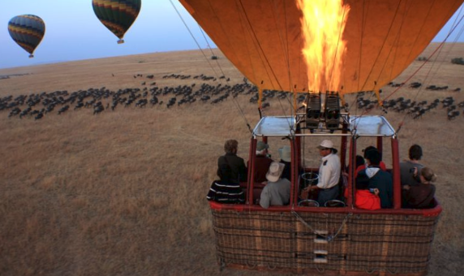
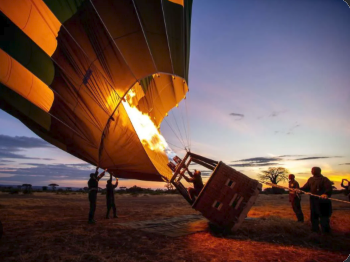
.png)
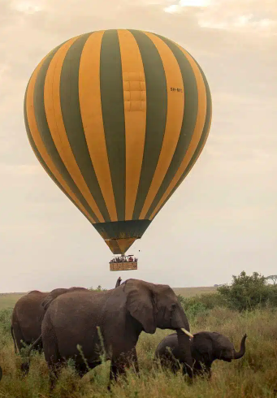